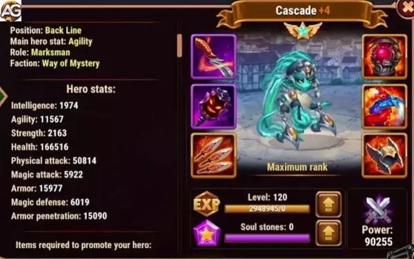

Guia do Dilúvio Hero Wars Alliance
Descubra o guia definitivo sobre como jogar com Dilúvio em Hero Wars Alliance. Explore as melhores composições de equipe, Tier List, counters, estratégias para a Hydra e dicas para maximizar habilidades, glifos, artefatos e skins para este herói versátil.
- Por: Alexandre Domingos. .
| Atributos Principais | Valores |
| Posição: | Linha de Trás |
| Função: | Atirador |
| Estatística Principal: | Agilidade |
| Facção: | Mistério |
| Como obter Pedras de Alma: | Eventos, Baú Heroico |
| Tier List 2024 | Classificação |
| Tier List Geral: | A+ |
| Tier List da Hidra: | B |
Estratégias Avançadas para Utilizar Dilúvio em Hero War Alliance
Em Hero War Alliance, cada herói tem suas próprias habilidades distintas que podem ser exploradas ao máximo com as estratégias corretas. Dilúvio, um jovem titã, é um desses heróis versáteis, cujas habilidades podem ser potencializadas com a sinergia certa. Neste artigo, vamos explorar as melhores estratégias para utilizar Dilúvio, especialmente ao trabalhar em conjunto com outros heróis como Maya, Satori e Heidi.
Sinergia com Maya, Satori e Heidi
Uma das sinergias mais poderosas de Dilúvio é com os heróis Maya, Satori e Heidi. Aqui está como eles funcionam juntos:
- Maya e Heidi: A terceira habilidade de Dilúvio, chamada "Refluxo", causa dano adicional para cada porção de dano infligido a um inimigo enquanto estiver ativo. Maya e Heidi possuem muitas habilidades com dano periódico, o que é multiplicado pelo efeito de Dilúvio. Isso significa que se Maya e Heidi atacarem os inimigos com dano puro periódico, a terceira habilidade de Dilúvio atingirá os inimigos com dano ainda mais puro.
- Satori: Dilúvio é eficaz com Satori devido à sua capacidade de dar dano extra para cada marca. Satori pode marcar os inimigos, e Dilúvio pode aproveitar essas marcas para causar ainda mais danos.
Por que os ataques básicos do Dilúvio causam 2 tipos de dano ao mesmo tempo (ataques mágicos e físicos)?
É um recurso exclusivo do Dilúvio. Além disso, o jovem titã pode causar 3 tipos de dano: mágico, físico e puro! Essa característica única permite que Dilúvio seja versátil no campo de batalha, causando danos significativos aos inimigos, independentemente de suas defesas.
Dilúvio pode matar Rufus?
A capacidade de matar Rufus depende das circunstâncias da batalha e das habilidades de Dilúvio. Como Dilúvio pode causar diferentes tipos de dano, sua eficácia contra Rufus pode variar. No entanto, sua versatilidade o torna uma ameaça formidável contra uma ampla gama de oponentes.
Compreendendo a 4ª Habilidade de Dilúvio
Uma das características mais marcantes de Dilúvio é sua quarta habilidade, que confere a ele uma adaptabilidade notável no campo de batalha. Essa habilidade permite que Dilúvio se ajuste aos diferentes tipos de dano presentes em uma equipe, seja mágico ou físico. Se receber um bônus de perfuração mágica, ele também receberá perfuração de armadura com o mesmo valor, e vice-versa. Essa capacidade de se ajustar às circunstâncias torna Dilúvio um complemento valioso para equipes com predominância de dano em um tipo específico.
Potencializando com Artefatos
Além das habilidades naturais de Dilúvio, seus artefatos também desempenham um papel crucial em seu desempenho no campo de batalha. Sua arma artefato oferece a ele dois buffs de perfuração de cada tipo, que se acumulam para aumentar ainda mais sua eficácia. Com um efeito duplo em si mesmo, Dilúvio pode aplicar até 38.000 de perfuração de armadura, tornando-o ainda mais formidável contra adversários resistentes.
Foco em Ataques Básicos e Habilidades de Suporte
Enquanto Dilúvio é capaz de causar uma variedade de danos, é importante reconhecer que seu ataque mais poderoso está concentrado em seus ataques básicos. Suas habilidades são mais voltadas para o suporte e controle do time, enquanto seus ataques básicos são onde ele inflige a maior parte de seu dano. Em situações ideais, Dilúvio pode até causar dano triplo com cada ataque básico, tornando-o uma força a ser reconhecida no campo de batalha.
Muito mais do que apenas um herói
Dilúvio é muito mais do que apenas um herói com habilidades de ataque. Sua versatilidade, sinergia com outros heróis e capacidade de adaptação fazem dele um dos personagens mais poderosos em Hero War Alliance. Ao entender suas habilidades e estratégias de uso, os jogadores podem maximizar o potencial de Dilúvio e liderar sua equipe rumo à vitória. Experimente diferentes combinações de equipe, artefatos e estratégias para descobrir o verdadeiro poder deste jovem titã.
Análise dos Talismãs da Dilúvio em Hero Wars Alliance
As habilidades de Dilúvio dependem muito de seu ataque físico, já que três de suas habilidades escalam com esse atributo. Isso torna a escolha do talismã crucial, dependendo se você deseja aumentar seu poder ofensivo ou melhorar sua sobrevivência nas batalhas. Vamos analisar os dois talismãs para ver em quais situações eles são mais adequados.
Talisman das Marés (Primeiro Talismã)
O Talisman das Marés fornece a Dilúvio agilidade adicional, o que, por sua vez, aumenta seu ataque físico e armadura. Este talismã foi projetado para maximizar o potencial ofensivo de Dilúvio, já que sua agilidade aumenta sua produção de dano. Com este talismã equipado, Dilúvio se torna uma formidável causadora de dano, com seu ataque físico aumentando e, como resultado, melhorando suas habilidades que dependem desse atributo.
| Slot | Estatísticas | Pontos Máximos |
|---|---|---|
| 0 | Agilidade | +2.000 |
| 1 | Ataque Físico | +4.400 |
| 2 | Ataque Físico | +4.400 |
| 3 | Ataque Físico | +4.400 |

Além disso, a habilidade de Dilúvio que reduz a armadura e a defesa mágica dos inimigos se torna mais eficaz com um ataque físico mais alto, permitindo que ela enfraqueça os inimigos de forma mais eficiente. Isso torna o Talisman das Marés ideal para builds ofensivas focadas em maximizar o dano de Dilúvio, ajudando-a a destruir as defesas inimigas rapidamente.
Talisman dos Redemoinhos (Segundo Talismã)
O Talisman dos Redemoinhos muda o foco para a sobrevivência, oferecendo um aumento significativo na vida e armadura de Dilúvio. Este talismã fornece até 110.000 pontos de vida e aumenta sua armadura, tornando-a muito mais resistente nas batalhas. Embora sacrifique parte do poder ofensivo de Dilúvio, ele melhora significativamente sua capacidade de suportar dano, especialmente em lutas prolongadas ou contra equipes focadas em ataque físico.
| Slot | Estatísticas | Pontos Máximos |
|---|---|---|
| 0 | vida | +110.000 |
| 1 | Armadura | +6.600 |
| 2 | Armadura | +6.600 |
| 3 | Armadura | +6.600 |
No entanto, com este talismã, a habilidade de Dilúvio de reduzir a armadura e a defesa mágica dos inimigos se torna menos eficaz, já que seu ataque físico é reduzido. Apesar desse trade-off, o aumento na vida e armadura permite que ela sobreviva por mais tempo no combate, abordando uma de suas principais fraquezas, sua tendência a morrer rapidamente sob fogo intenso.
Comparação e Estratégia
A principal diferença entre esses talismãs é o foco:
- Talisman das Marés: Mais adequado para maximizar o dano de Dilúvio, aumentando tanto seu ataque físico quanto sua capacidade de reduzir as defesas inimigas. Este talismã faz de Dilúvio uma ameaça ofensiva potente, capaz de causar danos significativos e enfraquecer inimigos de forma eficaz.
- Talisman dos Redemoinhos: Prioriza a defesa, aumentando muito a vida e a armadura de Dilúvio, tornando-a mais durável nas batalhas. Embora seu potencial de dano diminua, este talismã garante que Dilúvio sobreviva por mais tempo, especialmente contra equipes que causam grandes quantidades de dano físico.
Considerações Estratégicas
Ao escolher entre os dois talismãs, considere o tipo de equipe inimiga que você está enfrentando. Se você precisa que Dilúvio cause muito dano e enfraqueça as defesas inimigas, o Talisman das Marés é a melhor escolha.
Por outro lado, se Dilúvio está morrendo muito rapidamente, o Talisman dos Redemoinhos aumentará sua sobrevivência, permitindo que ela permaneça na luta por mais tempo, embora com menor produção de dano.
Em última análise, ambos os talismãs são valiosos, mas servem a diferentes propósitos. Use o Talisman das Marés quando precisar priorizar o dano, e o Talisman dos Redemoinhos quando a defesa e a sobrevivência forem essenciais para a vitória.
Dilúvio Pontos Positivos e Negativos
Pontos Positivos
- Dano extra para Heróis do Misterio
- Reduz a defesa dos inimigos
- Dano aos inimigos por estatísticas
- Arma artefato com duas habilidades de Armadura e Perfuração Mágica
Pontos Negativos
- Fraco contra Corvus
Prioridades de Evolução
Glifos
Nos glifos de Dilúvio, priorize a vida para sobrevivência, caso esteja morrendo rápido; e Agilidade para ganhar armadura de defesa física e melhorar as habilidades.
Após subir o glifo de vida e agilidade suba ataque físico para ganhar o buff das habilidades, por último suba junto perfuração de armadura para causar mais dano e armadura para mais defesa física.
| Prioridade | Descrição |
|---|---|
| 1 | Vida |
| 2 | Agilidade |
| 3 | Ataque Físico |
| 4 | Perfuração de Armadura |
| 5 | Armadura |
Artefatos
Nos artefatos do Dilúvio, priorize a arma pois é um artefato único que dá perfuração mágica e física para toda a equipe.
| Prioridade | Descrição |
|---|---|
| 1 | Arma (Perfuração Mágica e Perfuração de Armadura) |
| 2 | Anel |
| 3 | Livro |
Prioridade das Skins de Dilúvio
Ataque Físico - Super Skin: A Super Skin é fundamental para a Dilúvio, pois oferece o dobro de ataque físico em comparação com uma skin padrão. Priorize a melhoria desta skin para aumentar significativamente as capacidades ofensivas da Dilúvio.
Perfuração de Armadura: Melhorar a perfuração de armadura é crucial para superar as defesas inimigas de forma eficaz. Invista neste aspecto para garantir que a Dilúvio possa causar danos substanciais mesmo contra oponentes fortemente blindados.
Agilidade: A agilidade contribui para o poder de combate geral da Dilúvio, aumentando seu ataque e armadura, tornando-a mais forte nas batalhas. Embora não seja tão crítica quanto as prioridades acima, melhorar a agilidade ainda pode proporcionar vantagens valiosas em situações de combate.
Armadura: Aumentar a armadura melhora as capacidades defensivas da heroína, reduzindo o dano físico recebido em combate. Embora não seja tão crítica quanto outras prioridades, melhorar a armadura pode proporcionar proteção valiosa em batalhas, garantindo maior resistência contra ataques inimigos.
Ao focar na melhoria das skins da Dilúvio nesta ordem, você pode otimizar seu desempenho no campo de batalha e maximizar seu potencial como uma heroína formidável em Hero Wars Alliance.
| Prioridade | Atributos | Skins |
|---|---|---|
| 1ª | Ataque Físico +14190 | Skin+ Mítica |
| 2ª | Perfuração de Armadura +10650 | Skin de Inverno |
| 3ª | Agilidade +1365 | Skin Padrão |
| 4ª | Armadura +10650 | Skin Estelar |

Dilúvio com Visual de Agilidade, Hero Wars Mobile.
Dilúvio vs Hidras
Dilúvio não é um grande herói contra hidras, pois hidras são imunes a penalizações.
Dilúvio em Batalhas
Forte Contra
- Luther - Keira - K'arkh - Danada
Counters
- Corvus - Iris - Xe'sha - Jhu
Melhores Times de Dilúvio
Concluindo o Guia do Dilúvio em Hero Wars Alliance
A conclusão deste guia sobre Dilúvio em Hero Wars Alliance destaca a versatilidade e o potencial deste jovem titã no campo de batalha. Ao explorar suas habilidades e estratégias de uso, fica evidente que Dilúvio não é apenas um herói com habilidades de ataque, mas sim uma peça fundamental para qualquer equipe competitiva. Sua sinergia com outros heróis, como Maya, Satori e Heidi, oferece oportunidades únicas para maximizar o dano e a eficácia da equipe como um todo.
Além disso, ao priorizar corretamente os glifos, artefatos e skins, os jogadores podem potencializar ainda mais as habilidades do Dilúvio, tornando-o uma força imbatível no campo de batalha. Sua capacidade de causar múltiplos tipos de dano e se adaptar a diferentes situações faz dele um dos personagens mais poderosos em Hero Wars Alliance.
Em resumo, dominar o uso do Dilúvio requer compreensão de suas habilidades únicas, bem como a exploração de estratégias e combinações de equipe eficazes. Com dedicação e experimentação, os jogadores podem desbloquear todo o potencial deste jovem titã e liderar sua equipe rumo à vitória.
Sugestões de Vídeo:
Você pode ter interesse:
 Astaroth
Astaroth Celeste
CelesteDeixe Sua Opinião!
Você gostou do nosso Guia do Dilúvio? Há algo que não entendeu ou gostaria de sugerir mudanças? Convidamos você a se juntar à nossa sessão de comentários na página do Alexandre Games Blog. Não hesite em expressar sua opinião, clarificar suas dúvidas e compartilhar sua sugestões.
Clique no botão abaixo para começar: